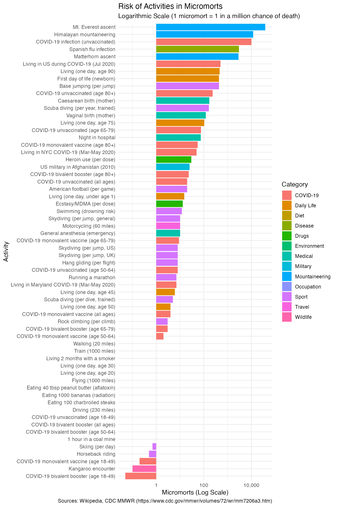

#> [1] 100This vignette introduces the micromort package, which provides tools for understanding and visualizing risks.
1. Micromorts (Acute Risk)
A micromort is a unit of risk representing a one-in-a-million chance of death. More precisely, it’s a microprobability of death — a one-in-a-million chance of a specific event (death) occurring.
Definition
| Term | Definition | Example |
|---|---|---|
| Microprobability | 1-in-a-million chance of any event | 1 micromort = microprobability of death |
| Micromort | 1-in-a-million chance of death, per event | Skydiving: 8 micromorts per jump |
Comparing Risks: Period Matters!
CRITICAL: When comparing micromort values, ensure the period is the same. For example:
| Activity | Micromorts | Period | Comparable? |
|---|---|---|---|
| Scuba diving | 5 | per dive | Per-event |
| Scuba diving | 164 | per year | Per-year (assumes ~33 dives/year) |
| Skydiving | 8 | per jump | Per-event |
The “per year” figure (164) conflates frequency with risk-per-event. A diver doing 5 dives/year vs 50 dives/year faces very different annual risk.
Conditional Risks
Many activities have selection effects. For example:
- Marathon running (7 micromorts): Runners are self-selected for fitness. This low figure reflects the health of participants, not the risk to an average person attempting a marathon.
- Motorcycle riding (10 micromorts/60 miles): Experienced riders face lower risk than novices, but the quoted figure is an average.
These figures answer: “Given that someone completed this activity, what was their death risk?” Not: “What would happen if a random person attempted this?”
Converting Probabilities to Micromorts
Common Risks Table
Visualizing Risks
Using plot_risks(), we can see the relative magnitude of different activities on a logarithmic scale. The plot is split into COVID-19 and Other risks to make comparisons easier:
#> Warning in ggplot2::scale_y_log10(labels = scales::comma, limits = c(0.01, : log-10 transformation introduced infinite values.
#> log-10 transformation introduced infinite values.
#> log-10 transformation introduced infinite values.
#> log-10 transformation introduced infinite values.
#> log-10 transformation introduced infinite values.
#> log-10 transformation introduced infinite values.
#> log-10 transformation introduced infinite values.
#> log-10 transformation introduced infinite values.
#> log-10 transformation introduced infinite values.
#> log-10 transformation introduced infinite values.
#> log-10 transformation introduced infinite values.
#> log-10 transformation introduced infinite values.
#> log-10 transformation introduced infinite values.
#> log-10 transformation introduced infinite values.
#> log-10 transformation introduced infinite values.
#> log-10 transformation introduced infinite values.
Interactive Version
For interactive exploration with hover details and category filtering, use plot_risks_interactive():
#> Warning in RColorBrewer::brewer.pal(max(N, 3L), "Set2"): n too large, allowed maximum for palette Set2 is 8
#> Returning the palette you asked for with that many colors
#> Warning in RColorBrewer::brewer.pal(max(N, 3L), "Set2"): n too large, allowed maximum for palette Set2 is 8
#> Returning the palette you asked for with that many colorsInteractive risk ladder with hover details and category filtering.
2. Microlives (Chronic Risk)
While micromorts measure sudden death, microlives measure the impact of chronic habits on your life expectancy. A microlife represents a 30-minute change in life expectancy per day of exposure.
Living at Different Speeds
A useful way to think about microlives: we all “use up” 48 microlives per day just by living (24 hours = 48 × 30 minutes). Unhealthy habits accelerate this consumption, while healthy habits slow it down.
A smoker who smokes 20 cigarettes per day uses up an additional 10 microlives, which can be interpreted as rushing towards death at 29 hours per day instead of 24. Conversely, someone with excellent lifestyle habits might effectively live at only 22 hours per day.
Healthcare bonus: Modern healthcare and healthier lifestyles give us a “payback” of approximately 12 microlives per day — our expected death is moving away from us even as we age.
Common Chronic Risks
| Factor | Microlives/day | Interpretation |
|---|---|---|
| Smoking 1 cigarette | -1 | Lose 30 min life expectancy |
| Being 5kg overweight | -1 | Lose 30 min/day |
| 20 min moderate exercise | +2 | Gain 60 min life expectancy |
| 2+ hours TV daily | -1 | Sedentary behavior |
| 5+ servings fruit/veg | +2 | Healthy diet |
Converting Life Expectancy to Microlives
#> [1] -20
#> [1] 2
#> [1] -13. Relationship Between Micromorts and Microlives
Theoretical Conversion
Micromorts (acute, per-event risk) and microlives (chronic, per-day attrition) measure different phenomena, but can be approximately converted using expected value theory.
Key relationship: 1 micromort ≈ 0.7 microlives
Assumptions for this conversion: 1. Remaining life expectancy = 40 years (use lle(prob, life_expectancy = ...) to adjust for any age; see also daily_hazard_rate()) 2. Death occurs immediately upon the event (worst case) 3. Linear approximation (valid for small probabilities)
Mathematical derivation:
- 1 micromort = 1/1,000,000 probability of death
- Expected life lost = probability × remaining life
- = 1e-6 × 40 years = 4e-5 years
- = 4e-5 × 525,960 minutes/year ≈ 21 minutes
- 1 microlife = 30 minutes, so 21 minutes ≈ 0.7 microlives
Why common_risks() uses microlives = micromorts × 0.7:
The conversion allows comparing a single risky event (like one skydive at 8 micromorts) to chronic daily habits (like smoking at -10 microlives/day). However, the approximation breaks down when:
- Remaining life expectancy differs from 40 years (a 20-year-old loses more per micromort than an 80-year-old)
- The risk is not immediate death (injuries, disabilities are not captured)
- Repeated exposures compound non-linearly
Unit Definitions (Summary)
| Metric | Unit Definition | Scope | Sign |
|---|---|---|---|
| Micromort | 1-in-a-million probability of death | Per discrete event (1 surgery, 1 flight) | Always ≥ 0 |
| Microlife | 30 minutes of life expectancy change per day | Per day of exposure/habit | + = gain, − = loss |
When to Use Each
- Use micromorts for discrete, short-duration events with binary outcomes (death or survival): surgery, skydiving, a single car trip
- Use microlives for chronic, daily habits that accumulate over a lifetime: smoking, exercise, diet
- Convert between them for policy decisions, but state your assumptions (age, remaining life expectancy)
4. Value of Statistical Life (VSL)
The Value of a Statistical Life (VSL) is the monetary value used to justify safety spending. It is NOT the value of an individual life, but the aggregate willingness to pay for small risk reductions.
US Valuation
Example: If a safety feature costs $50 and saves 1 life in 100,000 people (10 micromorts), is it worth it? Cost per micromort saved = $50 / 10 = $5. If VSL = $10M, then 1 micromort = $10. Since $5 < $10, it is cost-effective.
#> [1] 10UK Valuation: Micromorts ≈ Microlives
Interestingly, two UK government agencies arrive at similar valuations for micromorts and microlives:
| Agency | Metric | Value | Per Unit |
|---|---|---|---|
| NICE (NHS) | 1 QALY | ~£30,000 | £1.70 per microlife |
| Dept of Transport | Value of Statistical Life | £1,600,000 | £1.60 per micromort |
This near-equivalence (£1.60 ≈ £1.70) provides empirical support for the theoretical conversion: 1 micromort ≈ 1 microlife in policy terms.
#> [1] 1.6This consistency suggests that policy decisions affecting acute risks (transport safety) and chronic risks (healthcare interventions) can be compared on a common scale.
5. Loss of Life Expectancy (LLE)
LLE estimates the average time lost from a lifespan due to a specific risk. For a 1-in-a-million risk (1 micromort), the LLE is approximately 21 minutes (assuming 40 years remaining life).
#> [1] 21.0384
#> attr(,"class")
#> [1] "micromort_lle" "numeric"
#> attr(,"units")
#> [1] "minutes"6. Complementary Metrics: QALY, DALY, and Morbidity
Micromorts and microlives focus on mortality. But many conditions (like the common cold) cause significant quality of life loss without being fatal. Complementary metrics capture this morbidity burden.
QALY (Quality-Adjusted Life Year)
Measures years of life adjusted for quality. 1 QALY = 1 year of perfect health.
- Health states are weighted 0 (death) to 1 (perfect health)
- A year with chronic pain at 0.7 quality = 0.7 QALYs
- Used to assess cost-effectiveness of medical interventions (e.g., £20,000-30,000 per QALY threshold in UK)
DALY (Disability-Adjusted Life Years)
Measures disease burden as the sum of two components:
-
DALY = YLL + YLD, where:
- YLL (Years of Life Lost): From premature mortality
- YLD (Years Lived with Disability): From morbidity, weighted by disability severity
For fatal diseases like COVID-19, YLL dominates. For non-fatal conditions like the common cold, YLD dominates.
Comparing Metrics
| Metric | Unit Definition | Scope | Sign | Best For |
|---|---|---|---|---|
| Micromort | 1/1,000,000 death probability | Per discrete event (surgery, flight, climb) | ≥ 0 (probability) | Comparing single risky activities |
| Microlife | 30 min life expectancy change per day | Per day of chronic exposure | + gain / − loss | Daily lifestyle interventions |
| QALY | 1 year at perfect health (quality=1.0) | Per treatment/intervention | ≥ 0 | Cost-effectiveness in healthcare |
| DALY | 1 year lost to disease (YLL + YLD) | Per condition/population | ≥ 0 (burden) | Global health prioritization |
| QALD | 1 day at perfect health | Per illness episode | ≥ 0 | Short-term morbidity (colds, flu) |
References
- Spiegelhalter D (2012). “Using speed of ageing and ‘microlives’.” BMJ 2012;345:e8223. doi:10.1136/bmj.e8223
- Spiegelhalter D (2012). “Understanding uncertainty: Microlives.” Plus Magazine. plus.maths.org
- WHO Global Burden of Disease: ghdx.healthdata.org
- NICE Methods Guide: nice.org.uk
7. Conditional Risks: Cancer, Vaccination, and Risk Hedging
Cancer Risks by Type and Sex
The cancer_risks() function provides mortality data stratified by cancer type, sex, and age group:
Family history impact: The family_history_rr column shows relative risk increase with a first-degree relative’s diagnosis. For example, prostate cancer risk increases 2.5× with family history.
Vaccination Risk Reduction
The vaccination_risks() function quantifies micromorts avoided through vaccination:
Hedged vs Unhedged: Optimal Lifestyle Comparison
The conditional_risk() function compares risk factors between optimal (“hedged”) and suboptimal (“unhedged”) states:
Total Portfolio Effect
The hedged_portfolio() function calculates total life expectancy gain from adopting all optimal lifestyle choices:
Interpretation: A fully “hedged” individual (non-smoker, regular exercise, healthy diet, vaccinated, etc.) can expect to gain significant additional life expectancy compared to an “unhedged” baseline.
Conditional Acute Risks: Age Changes Everything
Conditional risk analysis isn’t limited to chronic lifestyle factors. Some acute risks show extreme age-conditioning that makes population averages misleading.
Example: Falling out of bed kills ~450 Americans per year (CPSC). The population average is 1.36 micromorts/year — but the CDC age-stratified data reveals a 2,500-fold difference across age groups:
| Age group | Sex | Fall deaths per 100,000/year | Micromorts per night of sleep |
|---|---|---|---|
| Under 65 | Both | ~0.4 | 0.004 |
| 65-74 | Male | 24.7 | 0.68 |
| 65-74 | Female | 14.2 | 0.39 |
| 85+ | Male | 373.3 | 10.2 |
| 85+ | Female | 319.7 | 8.8 |
An 85-year-old man going to bed faces ~10 micromorts per night — comparable to riding a motorcycle 60 miles (10 micromorts/trip) or a single dose of ecstasy (13 micromorts/dose). For someone under 65, the same activity carries 0.004 micromorts per night — essentially zero.
This pattern recurs across many “exotic” risks:
- Bee/wasp stings (72 deaths/year, US): Nearly all fatalities are among the ~1% of the population with venom allergy. Conditional on allergy: high risk per sting. Conditional on no allergy: near-zero.
- Cow trampling (22 deaths/year, US): Population rate is 0.07 micromorts/year. For cattle farmers handling animals daily: ~7.5 micromorts/year — a 100-fold increase.
- Lightning strike (28 deaths/year, US): Population rate is 0.08 micromorts/year. For outdoor agricultural workers: ~1.2 micromorts/year — a 15-fold increase.
The lesson: always ask “conditional on what?” before comparing micromort values across populations or activities. For a deeper treatment of how confounding variables distort risk data, including Simpson’s paradox and stratification strategies, see the Confounding Variables vignette.
8. Data Quality: The Denominator Problem
Not every widely-cited risk statistic belongs in a curated dataset. Many “exotic” risk figures circulate in media and popular science without the rigorous exposure denominator needed for meaningful micromort calculations. This section explains why certain risks were excluded and what to watch for when interpreting risk data.
8.1 The Three Denominator Failures
A micromort value is only meaningful when paired with a clear period — the unit of exposure. We require: Deaths ÷ Exposures = Probability. Three common failures make this impossible:
1. Unknown denominator (no exposure count)
| Risk | Annual deaths (US) | What we don’t know |
|---|---|---|
| Bee/wasp stings | 72 | How many sting exposures per year? Is this per sting, per outdoor hour, per year of beekeeping? |
| Dog mauling | 43-127 | Per dog interaction? Per year of dog ownership? Per year of existing near dogs? |
| Fire ant stings | ~30 | Per sting event? Per year in fire ant territory? |
The 72 bee sting deaths per year (CDC MMWR) is a solid numerator from the National Vital Statistics System. But without knowing the total number of sting exposures, we cannot calculate a per-sting micromort value. The best we can do is a per-year population rate (0.22 micromorts/year for any US resident), which conflates people who never encounter bees with beekeepers stung weekly.
2. Misleading population average (hides conditional risk)
| Risk | Population average | Conditional reality |
|---|---|---|
| Falling out of bed | 1.36 micromorts/year (US) | Under-65: ~0.004/night; Age 85+ male: 10.2/night |
| Cow trampling | 0.07 micromorts/year (US) | General public: ~0; Cattle farmer: ~7.5/year |
| Lightning strike | 0.08 micromorts/year (US) | Indoor worker: ~0.02; Outdoor agricultural worker: ~1.2/year |
Falling out of bed kills ~450 Americans per year (CPSC), but the CDC age-stratified data (Data Brief 532) reveals a 2,500-fold difference: an 85-year-old man faces ~10 micromorts per night of sleep (comparable to riding a motorcycle 60 miles), while someone under 65 faces ~0.004. The population average of 1.36/year is technically correct but practically useless.
3. Fabricated or untraceable numerator
| Claim | Cited figure | Actual evidence |
|---|---|---|
| Coconut deaths | “150 per year worldwide” | Originated from a travel insurance press release (Club Direct, late 1990s), not from Barss (1984). The original Barss paper documented only 2 deaths over 4 years at one Papua New Guinea hospital. (Snopes: Unproven) |
| Champagne cork deaths | “24 per year” | Traced to a 2008 Daily Mail article citing a tabloid book. No government vital statistics, hospital registry, or peer-reviewed study supports this figure. |
| Left-handed equipment deaths | “9 years shorter lifespan” | A statistical artefact from Halpern & Coren (1991), debunked by multiple papers. The apparent age gap reflects historical suppression of left-handedness reporting, not excess mortality (van der Hoeven et al., 2023). |
8.2 Inclusion Criteria for This Package
Risks in common_risks() and acute_risks() meet these minimum standards:
- Traceable numerator: Death count from a government agency (CDC, CPSC, WHO, NOAA) or peer-reviewed epidemiological study
- Defined denominator: A meaningful exposure unit (per ride, per climb, per day, per trip) — not just “per year of being alive”
- Reproducible calculation: The micromort derivation can be independently verified from the cited source
- Not a myth: The figure has not been debunked by subsequent peer-reviewed work
Risks that fail criterion 2 but pass the others may still appear with period = "per year" as a background population rate, clearly labelled as such. See risk_data_sources() for full provenance of each entry. For examples of how confounding variables (age, occupation, allergy status) can change risk estimates by orders of magnitude, see the Confounding Variables vignette.
8.3 When “Per Year” Is Legitimate
Some risks are genuinely background hazards where the exposure is simply being alive in a given geography:
- Lightning strike: 0.08 micromorts/year (US) — everyone is exposed to thunderstorms
- Asteroid impact: 0.01 micromorts/year (global) — a theoretical actuarial average (NASA)
- Living one day at age 75: 120 micromorts/day — the baseline hazard rate from all causes
These are valid “per year” figures because the denominator is the entire population and the exposure is unavoidable. The problem arises when a per-year population rate is presented for an activity that only a fraction of the population engages in.
9. Conclusion
The micromort package helps translate abstract probabilities into concrete units for better decision-making. By comparing acute risks (micromorts), chronic risks (microlives), and quality-of-life metrics (QALYs, DALYs), individuals and policymakers can make more informed choices about risk trade-offs.
The new conditional risk functions enable:
- Cancer risk assessment: Compare baseline risk to family history scenarios
- Vaccination value: Quantify micromorts avoided through vaccination schedules
- Lifestyle optimization: Calculate total life expectancy gain from adopting optimal “hedged” behaviors